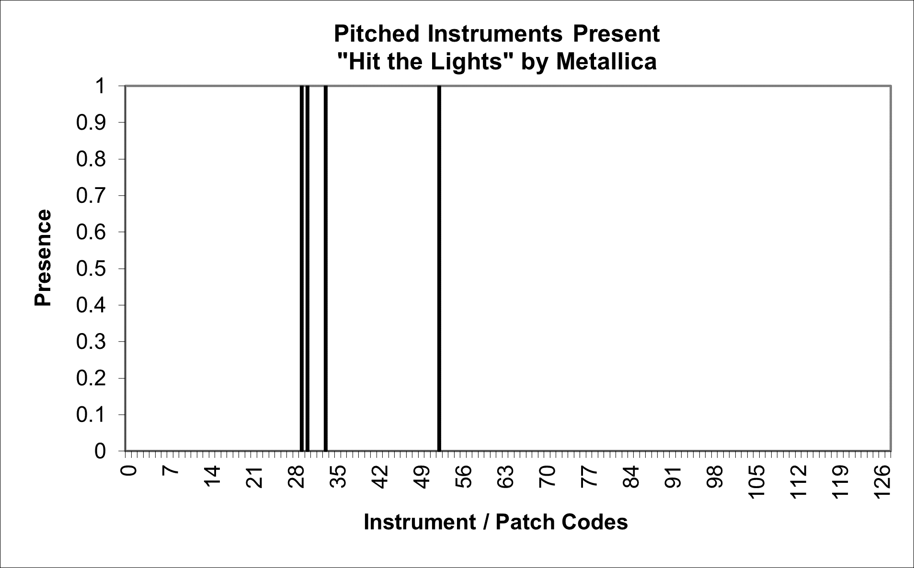
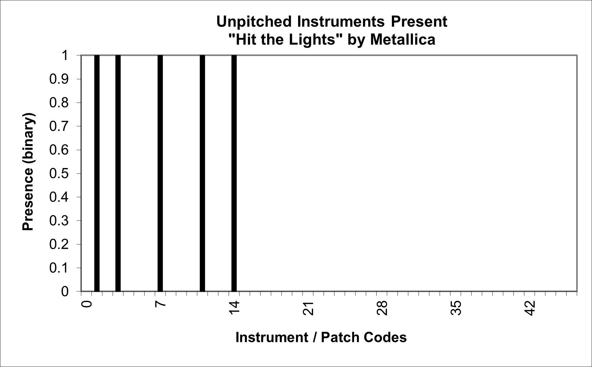
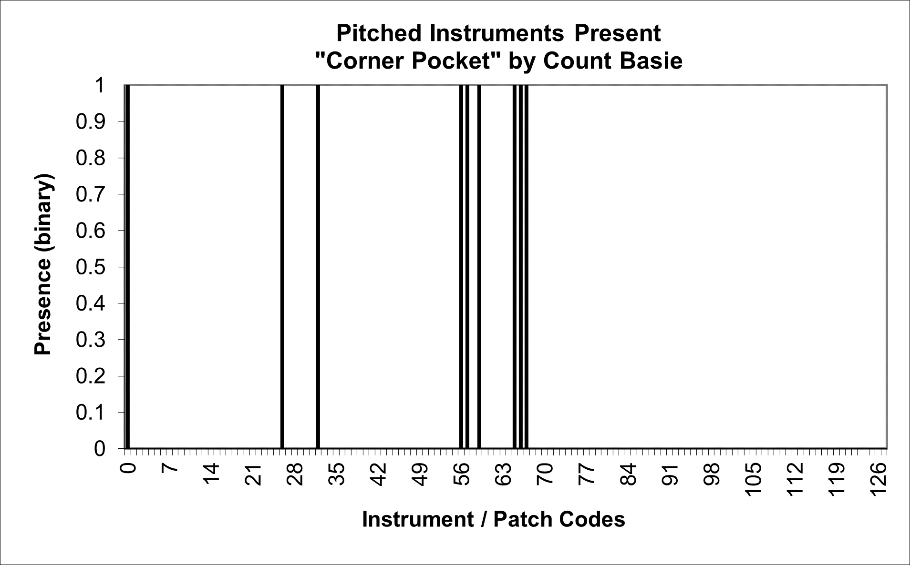
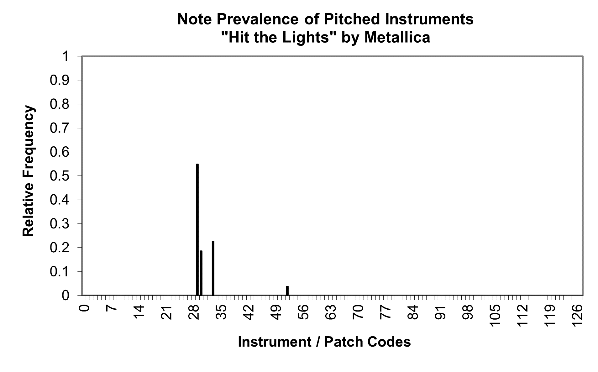
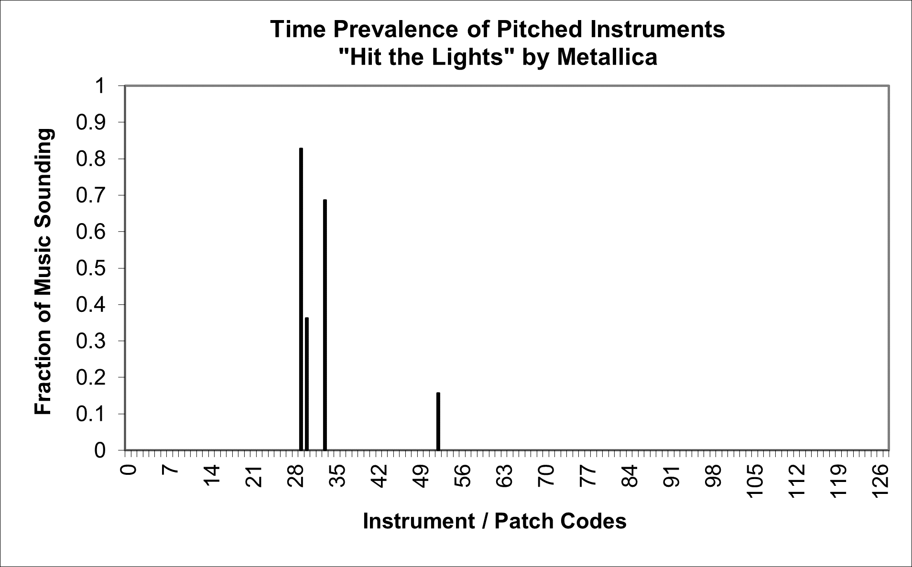

| Feature Explanations: Instrumentation |
|---|
GENERAL NOTES
Although there is a significant amount of literature on instrumentation (which is used here to refer collectively to instruments, voice and electronic sound types) with respect to composing and arranging, few music analytical systems take instrumentation into consideration. This is a shame, as information on instrumentation can in fact be very helpful in distinguishing between various musical categories, based not only on which instruments are present, but also in terms of their relative prevalence in given pieces of music. jSymbolic therefore extracts a range of features measuring these and other elements of instrumentation.
Before discussing the details of the jSymbolic instrumentation features, it is useful to first briefly review how MIDI represents instrumentation. The General MIDI (level 1) specification allows MIDI streams to associate each note played (on MIDI channels other than 10, as discussed below) with one of 128 different "patches," or sound types, almost all of which correspond to different pitched instruments. For example, MIDI patch 0 corresponds to an acoustic grand piano, patch 41 is a viola, patch 67 is a baritone saxophone and so on. These patch numbers are standardized, but some sources begin the enumeration at 0 (e.g. this site), while others start it at 1 (e.g. this site), in which case an acoustic grand piano is patch 1, a viola is patch 42, etc.; jSymbolic's features adopt the former convention, so that the acoustic grand corresponds to patch 0, not patch 1. In the MIDI standard, each MIDI channel is assigned a single patch at a time, which will be associated with all MIDI Note Ons played on that channel, and MIDI "Program Change" messages can be specified at any time to change this patch, which will then be associated with subsequent (but not previous) MIDI Note Ons played on that MIDI channel.
The General MIDI standard further specifies that notes sounded on MIDI Channel 10 are to be treated differently: for this specific channel, and this channel only, the instrument each note corresponds to depends on the "pitch" value of its Note On message (which, in the special case of MIDI Channel 10 only, specifies patch rather than pitch). The MIDI Program Change messages that would normally indicate the patch that notes should be played with do not apply to Channel 10. Furthermore, the patches used for Channel 10 are entirely different from the 128 patches used for other channels; instead they correspond to the MIDI "Percussion Key Map," which (mostly) corresponds to unpitched percussion instruments. For example, a Note On message with pitch 35 on Channel 10 corresponds to an acoustic bass drum, pitch 49 to a crash cymbal, pitch 60 to a "hi bongo" and pitch 81 to an open triangle. The complete list of MIDI Percussion Key Map instruments is available on this site. Only pitches 35 to 81 are included in the formal MIDI standard, so jSymbolic only includes those, and largely ignores any (effectively invalid) notes on Channel 10 not in this pitch range.
So, between the 128 primary General MIDI patches and the 47 MIDI Percussion Key Map patches, MIDI (and thus jSymbolic) can recognize 175 different "instruments" (i.e. patches). Although these MIDI patches are certainly much fewer in number than the full range of extant instruments, and are particularly inadequate with respect to non-Western musics (which are quite poorly represented in the MIDI standard, with only a few exceptions like the shakuhach, sitar or shehnai), they are nonetheless diverse enough for a reasonable variety of Western musical types, including both traditional, "art" and popular musics.
It is important to be aware that features based on MIDI instrumentation can be sensitive to encoding inconsistencies or errors. In a some (fortunately rare) cases, encoders fail to specify patch numbers at all (i.e. they do not include any MIDI Program Change messages), with the result that all notes are assigned the acoustic grand piano patch by default, which is in effect an error if the music should actually correspond to one or more other instruments. Another problem is the inconsistency that can result from the range of patches that can be used to represent sung lines (options include patches 52 ("choir aahs"), 53 ("voice oohs") and 54 ("synth voice")) or electric guitar (options include patches 26 ("electric guitar jazz") to 30 ("distortion guitar")), for example. Unfortunately, there is even less standardization in how alternative symbolic formats to MIDI (like MusicXML or MEI, for example) specify instrumentation (they typically just use raw text instrumentation identifiers, with no generally accepted standardized namespace or language), which can make instrument equivalency mapping almost impossible to do perfectly in such formats. So, if instrumentation-based features are used in a study, it is important to ensure that the corpus being studied is encoded using a consistent methodology for representing instruments, otherwise encoding bias can result; if such consistency is not possible, then it may be better to omit instrumentation-based features so as to avoid encoding bias.
As is the case with other types of features, histograms can provide a useful starting point for constructing features based on instrumentation, both directly as feature vectors themselves and as intermediate representations for calculating derivative features (please consult the section of the manual on overall pitch statistics for a brief general introduction to histograms). The most basic of these histograms calculated by jSymbolic are the pitched instruments present and unpitched instruments present histograms: the former has one bin for each of the 128 General MIDI patches described above (with enumeration starting at 0), and the latter has one bin for each of the 47 MIDI Percussion Key Map patches described above (the numbering is translated down by 35 so that indexing can start at 0, such that bin 0 corresponds to an acoustic bass drum, bin 14 to a crash cymbal, etc.). The bins for each of these histograms are binary, so each bin is set to 0 if no notes belonging to the corresponding patch are present in the music being analyzed, and to 1 if at least one note from the bin's patch is present. These two histograms are respectively shown before for the Metallica song "Hit the Lights":


The pitched instruments present histogram above shows that this metal song contains notes belonging to General MIDI patches 29, 30, 33 and 52, which respectively refer to the "overdriven guitar," "distortion guitar," "electric bass (finger)," and "choir aahs" General MIDI patches. This encoding example was chosen specifically because it nicely illustrates the ambiguities one must be aware of when dealing with MIDI instrumentation: firstly, the "choir aahs" patch was presumably used by the encoder for the vocal part because MIDI has no clear patch to use for a single sung line (like what is found in this song, which does not actually contain any choir music); secondly, this song does indeed include two electric guitar parts, but which should be called "overdriven" and which should be called "distortion" is arbitrary. Most cases are much less problematic than this (such as the piece by Count Basie shown in the figure below, which has unambiguous patch codes for the kinds of instruments associated with big band jazz, and which has a patch profile that allows it to be easily distinguished from instrumentations typical of other types of music), since voice and electric guitar tend to be the most ambiguously encoded patches in MIDI, but one should nonetheless be aware of these issues and make sure that all the music in any given corpus uses consistently encoded instrumentation. In the case of the second histogram above, showing the unpitched instruments present in the Metallica song, there is no such ambiguity: Percussion Key Map notes codes 1, 3, 7, 11 and 14 are present, which correspond to "bass drum," "acoustic snare," "closed hi-hat," "open hi-hat" and "crash cymbal," all of which match to the drum kit components found in the actual song.

The pitched instruments present and unpitched instruments present histograms discussed above are useful for highlighting which instruments are present in absolute terms, which can be usefully discriminatory in classification problems; for example the presence of even a single note by an overdriven guitar is a good indication that a piece under examination is not a classical symphonic work or a Renaissance mass. However, it can also be useful to gain insight on how prominent in a piece various instruments are relative to one another, beyond just knowing whether they are present or not. jSymbolic constructs the note prevalence of pitched instruments and note prevalence of unpitched instruments histograms for just this purpose, the former of which has one bin for each of the 128 General MIDI patches described above (with enumeration starting at 0), and the latter of which has one bin for each of the 47 MIDI Percussion Key Map patches described above (the numbering is translated down by 35 so that indexing can start at 0, such that bin 0 corresponds to an acoustic bass drum, bin 14 to a crash cymbal, etc.). Each bin value indicates the fraction of Note Ons played by that bin's corresponding patch, relative to the number of Note Ons played by all the other patches on the same histogram. This considers only the number of attacks for each patch, and disregards the duration of notes. The note prevalence of pitched instruments histogram for the same Metallica song is shown below:

This histogram shows that, for example, most of the notes were played by the "overdriven guitar" patch (which corresponds to the rhythm guitar part of the song), and that only a relatively small fraction of notes (3.8%) were played by the "choir aahs" patch (the vocals part). This is reasonable given the note density of the three instrumental parts compared to the vocal part, and graphs like this can potentially be quite in distinguishing between categories in various classification problems.
It can also be useful to gain insight on the relative importance of different patches in a piece in terms of how long notes are sounding in music, rather than just focusing on attacks as the two note prevalence histograms introduced above do. jSymbolic therefore includes a time prevalence of pitched instruments histogram, which shows, for notes played on MIDI channels other than Channel 10, for each of its 128 patch bins, the fraction of the music being analyzed during which one or more notes was sounding belonging to that bin's patch. This type of histogram is quite different from the note prevalence histograms considered above in two important ways beyond just its focus on duration rather than note attacks. Firstly, it effectively collapses notes played simultaneously using the same patch (e.g. chords), since a given unit of time sounding is given the same weight for any given patch regardless of how many notes belonging to that patch are sounding during that unit of time; a single note held on a bass compared to a dense 6-note chord held on a guitar during the same time interval will thus be counted equally for the purpose of this histogram (unlike the note prevalence of pitched instruments histogram, where the guitar chord would have six times the weight, and where the durations of notes would also be irrelevant). Secondly, this time prevalence histogram is not normalized, since its bin values indicate the fraction of the piece during which notes played with that bin's patch were sounding, not the fraction of the notes, and not the fraction of the total combined duration of all notes. These aspects are evident in the time prevalence of pitched instruments histogram for the same Metallica song, shown below:

It is clear from this histogram that the rhythm guitar part still dominates, but the less harmonically or rhythmically dense bassline (which mostly consists of relatively longer held notes) is almost as significant in terms of time prevalence, as one would expect (and much more so than in the note prevalence histogram discussed earlier). The vocal part is also much more more apparent (with vocal notes sounding during 15.7% of the song's duration), which perhaps better represents its true significance in the song, since it lacks simultaneously held notes and consists of longer notes than the guitar lines, but there are still ample parts of this song during which no vocals are sounding.
JSYMBOLIC FEATURE CATALOGUE (INSTRUMENTATION SECTION)